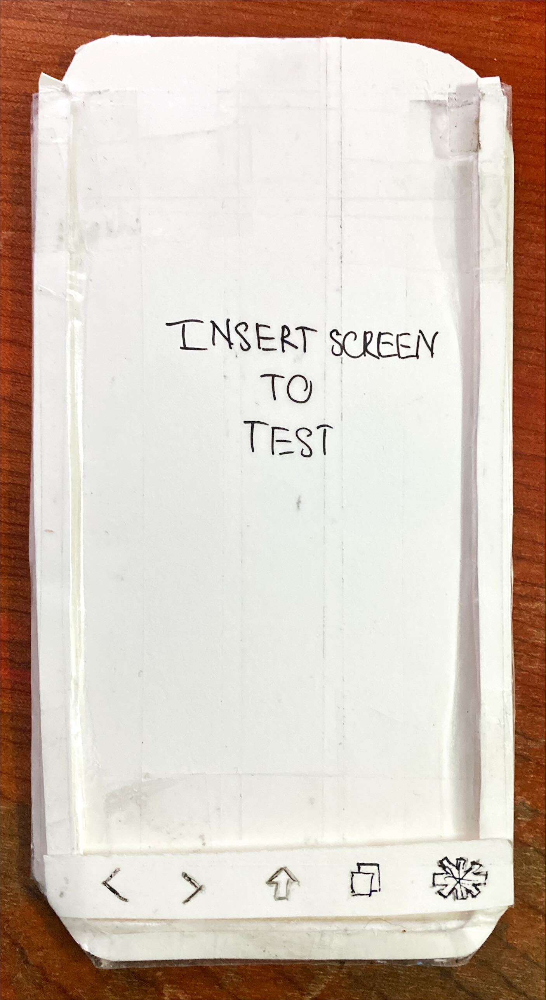
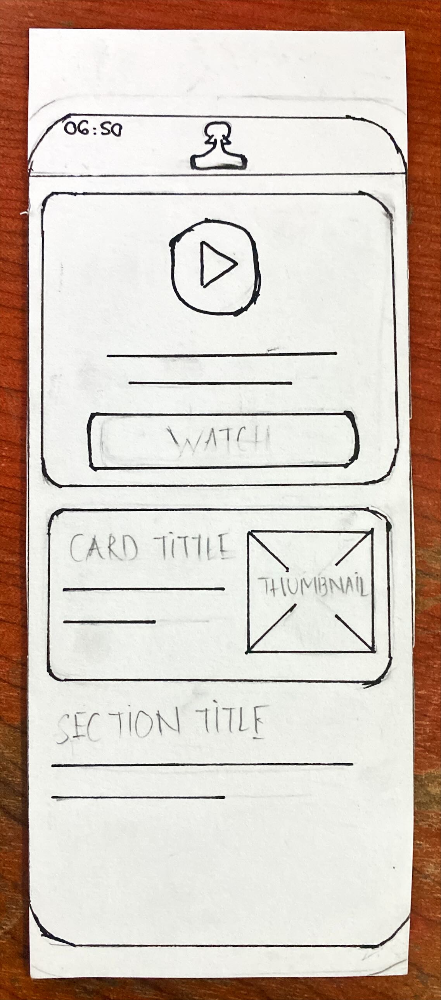
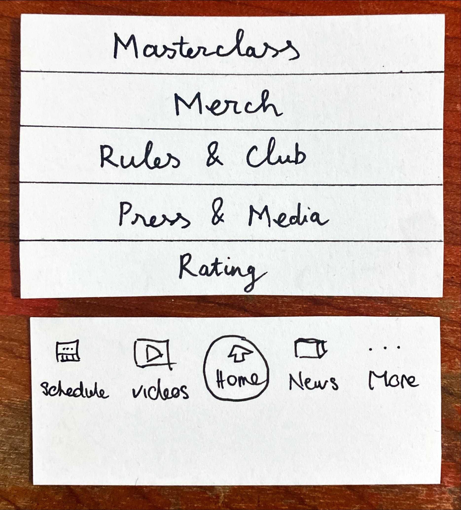
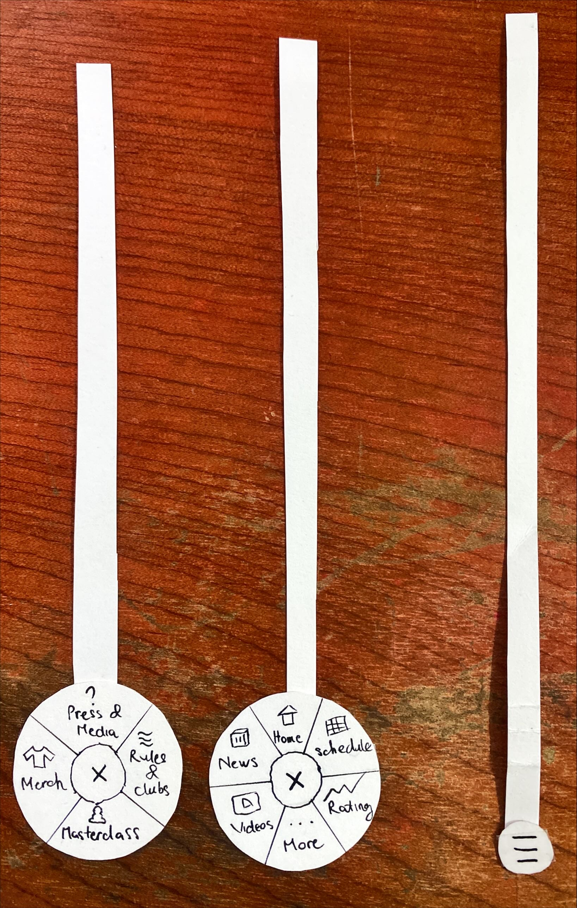
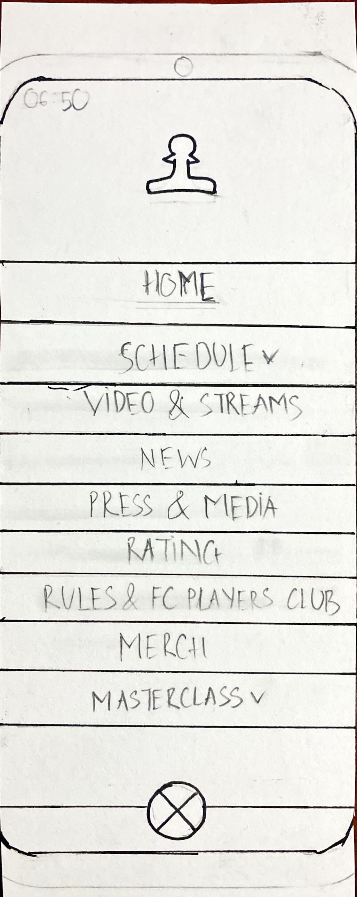
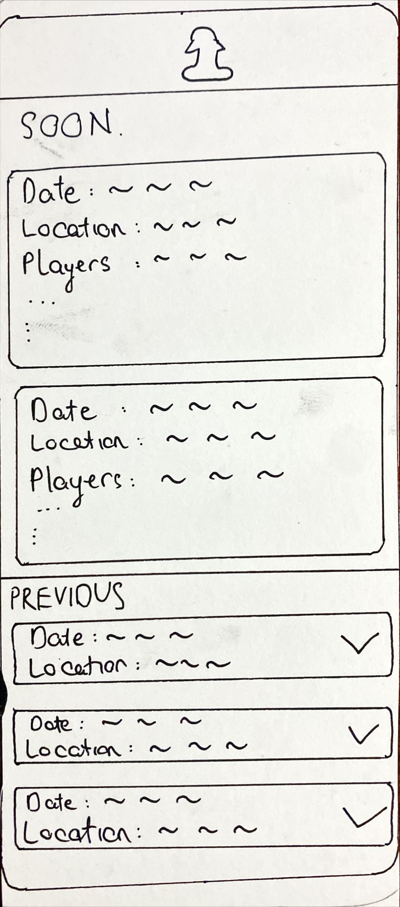
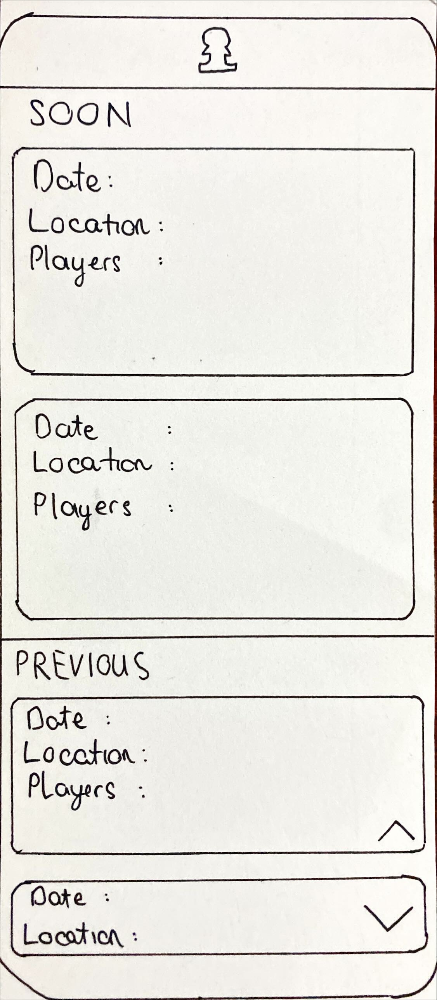
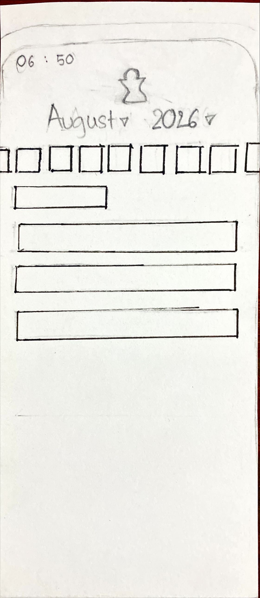
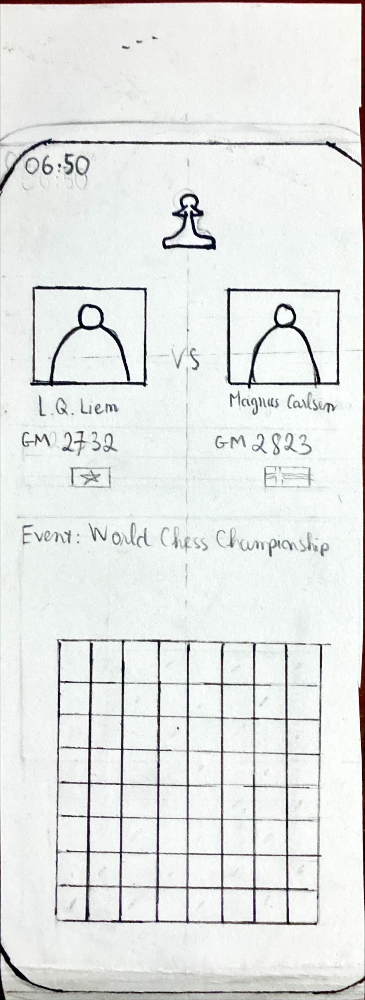
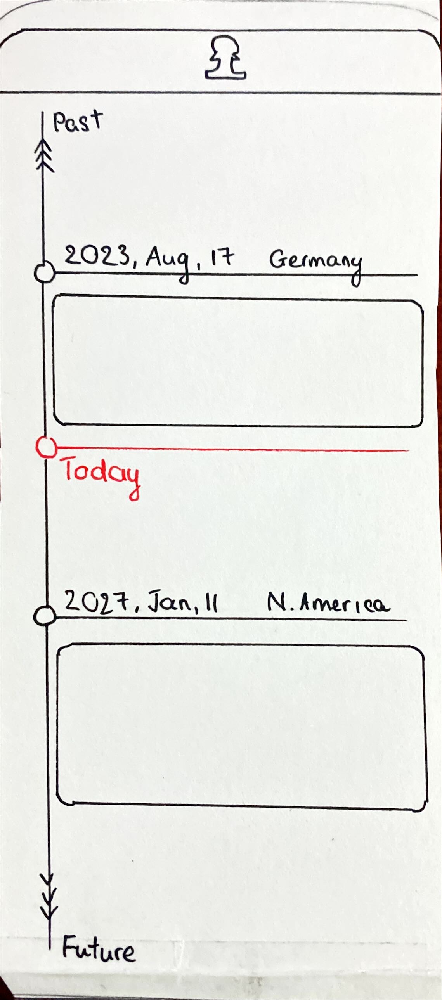

Paper Prototype &
Formative Testing
Freestyle Chess Mobile Web — Group 06
Project Assignment 3 · ThS. Phạm Nguyễn Sơn Tùng · 2026
Agenda
Top Priority Issues
2 Tasks × 3 Variants = 6 Paper Prototypes
Task 1: Navigation Bar
Bottom Nav · FAB Menu · Bottom Hamburger
Task 2: Schedule
Accordion Cards · Date Filter + Detail · Vertical Timeline
One-Handed Navigation
"The user is walking while using the phone with one hand (thumb only). They want to quickly switch from the Home screen to the Schedule page."


Fixed Bottom Navigation Bar
A persistent tab bar (Home, Schedule, Rating, Videos) fixed at the bottom of the screen — always within thumb reach.

Floating Action Button (FAB)
A floating circular button at bottom-right that expands into a radial/fan menu with navigation shortcuts.

Bottom Hamburger Menu
Move the traditional hamburger menu from top-left to bottom — reachable by thumb. Opens full-screen overlay menu.

Schedule & Tournament Lookup
"A chess follower wants to find the player list for a past tournament, or view detailed matchup info (e.g., L.Q.Liem vs Magnus Carlsen)."
Variant 1
Accordion Cards
Variant 2
Date Filter + Detail Page
Variant 3
Vertical Timeline
Accordion / Collapsible Cards
Schedule page split into SOON (upcoming) and PREVIOUS (past) sections. Past cards are collapsed with ▼ icon — tap to expand inline.


Date Filter + Detail Page
Dropdown filters for Month & Year + date strip at top. Each match card has a "Detail →" button leading to a dedicated match detail screen with player info & chessboard.


Vertical Interactive Timeline
A continuous vertical timeline with a red "Today" marker at center. Scroll up for Past tournaments, scroll down for Future events — infinite, intuitive browsing.

Variants Comparison
| Criteria | V1: Bottom Nav | V2: FAB Menu | V3: Bottom Hamburger |
|---|---|---|---|
| Tap Count | 1 Tap ★ | 2 Taps | 2 Taps |
| Thumb Reachability | Very High | Very High | High |
| Cognitive Load | Low | Medium | Higher |
| Criteria | V1: Accordion | V2: Date Filter | V3: Timeline |
|---|---|---|---|
| Lookup Speed | Very Fast | Medium | Fast |
| Info Completeness | Adequate | Very High ★ | Adequate |
| Interaction UX | Simple, Familiar | Professional | Unique, Visual |
Testing Plan
Objective
Evaluate the usability of 6 lo-fi paper prototypes through formative testing before building hi-fi prototypes.
Target Users
2-3 participants with no prior knowledge of the prototypes. Chess followers / mobile web users.
Method
Paper Prototype Testing with Think-Aloud Protocol. Qualitative + quantitative data collection.
Metrics
Success Criteria
Task completed without critical errors. Users can navigate intuitively without help.
Testing Procedure & Roles
Facilitator
Reads the scenario script. Guides user through tasks. Encourages think-aloud protocol. Does not hint or assist.
Computer
Stands behind the paper prototype. Swaps paper pieces when user taps an element. Simulates system feedback silently.
Observer
Counts taps, measures time. Notes errors, hesitations, rage clicks. Records video for analysis. Captures qualitative feedback.
Testing Results
per variant — to be filled after testing
| Metric | V1 | V2 | V3 |
|---|---|---|---|
| Avg. Taps | — | — | — |
| Avg. Time (s) | — | — | — |
| Error Count | — | — | — |
Best Variant Selection
Task 1: Navigation
based on testing results — to be filled
Task 2: Schedule
based on testing results — to be filled
Thank You.
Questions & Feedback Welcome
Next: PA4 → Hi-fi Prototype & Final User Study